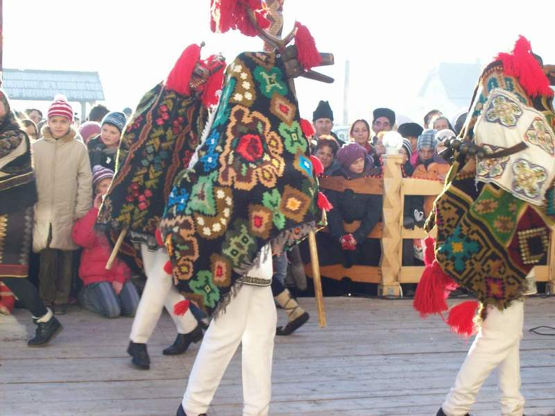
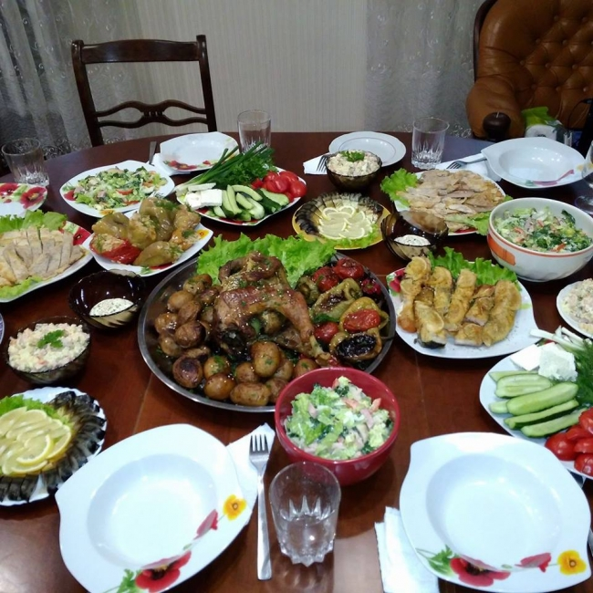
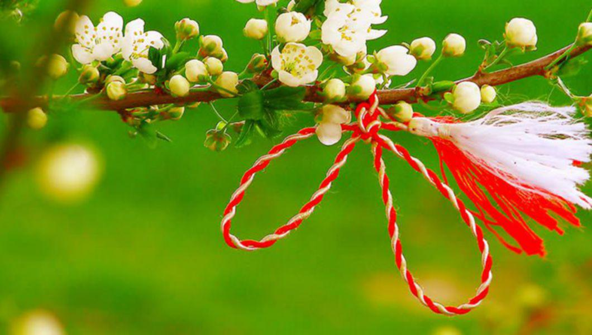
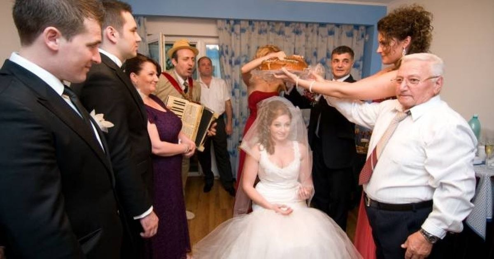
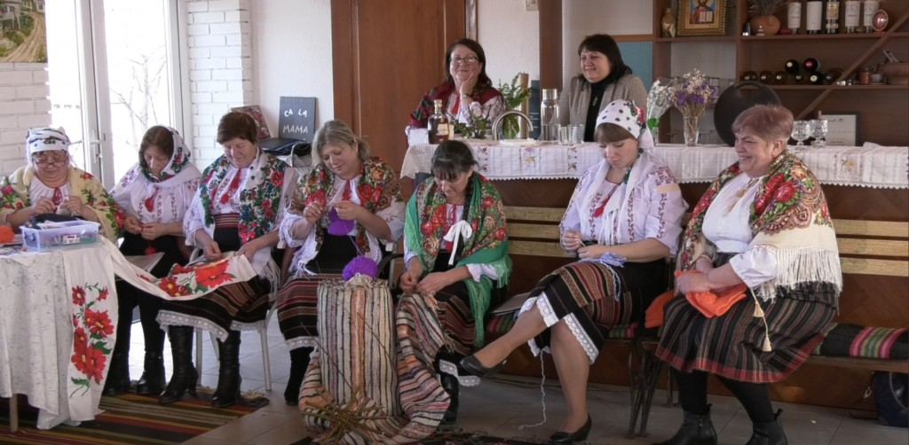

Tradiții și obiceiuri
Sărbătorile de Iarnă

-
Perioada dintre Crăciun și Sfântul Vasile este cea mai bogată în manifestări folclorice.
- Colindatul: Grupurile de copii și tineri merg din casă în casă pentru a vesti Nașterea Domnului. În Bilicenii Vechi, colindele păstrează o formă arhaică, fiind acompaniate deseori de urări specifice pentru gospodari.
- Malanca și Mascații: Un obicei spectaculos este jocul măștilor (Capra, Ursul, Căiuții), care simbolizează moartea și renașterea anului. Tinerii se costumează și creează adevărate spectacole de teatru popular în centrul satului.
Hramul Satului

-
Hramul este cea mai importantă sărbătoare comunitară, fiind un moment de reîntregire a familiilor.
- Sărbătoarea religioasă: Se celebrează de obicei legat de sfântul ocrotitor al bisericii locale. Gospodinele pregătesc bucate tradiționale (sarmale, răcituri, plăcinte "poale-n brâu").
- Casa Mare: Este pregătită cu mare grijă, fiind locul unde sunt primiți oaspeții și unde sunt etalate cele mai frumoase prosoape și covoare țesute manual.
Tradiții de Primăvară și Vară

- Mărțișorul: La 1 martie, localnicii respectă tradiția oferirii mărțișoarelor, care ulterior sunt legate de ramurile pomilor fructiferi pentru a atrage rodul și norocul.
- Duminica Mare (Rusaliile): Satul se primenește cu ramuri de nuc și pelin puse la porți și la icoane, pentru a proteja gospodăria de spiritele rele. Este și perioada în care se curăță fântânile, un simbol al purității vieții rurale.
Obiceiuri de Nuntă

-
Nunta în Bilicenii Vechi păstrează elemente din ritualul vechi moldovenesc:
- Iertăciunea: Momentul emoționant în care mirii își iau rămas bun de la părinți și cer binecuvântarea acestora.
- Jocul Colacului: Nașii joacă colacul miresei, simbolizând prosperitatea și unitatea noii familii.
Meșteșugurile și Șezătorile

Deși mai rar întâlnite astăzi, șezătorile de iarnă erau contextul în care se transmiteau legendele locului, cântecele de dor și tehnicile de brodat sau țesut. Bilicenii Vechi este cunoscut pentru oameni gospodari care prețuiesc lucrul pământului, vița-de-vie fiind un element central în cultura locală.